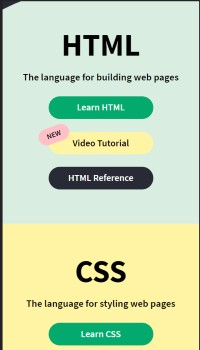

Repetition
Church of Jesus Christ of Latter Day Saints
Church Website
The use of repetition on this page is what stands out to me. The images and text in the body are all uniformly laid out for us. The images are all roughly the same size, followed by text that are the same font and size. They even look to have the exact same amount of spacing. The uniform design makes them stand out from the other icons and items in the header and navigation bars.. It tells me that these items are all the same and leads me to believe they all do the same thing or have the same functionality.
Alignment
Linked In
LinkedIn Website
There is a lot of text here on this website. It is a social media site so there are going to be lots of posts and images. The use of alignment here is important for the overall readability and user experience. Nothing is exactly centered on the screen and things are aligned from left to right. For a native english speaker like me, this makes reading the content easier. The start a post box is a great example of this. It isn't directly center of the page it hovers off to the left. Beginning to type feels natural.
White Space
W3Schools
W3Schools website I really like the use of White Space here. At heart, I am a minimalist so I love lots of space and simple asthetics. We can see a lot of space being used for padding the main content in the boxes. The objects of the main content are all spaced apart as well. There is padding within the link buttons as well which makes it overall more readable. I would even mention the new icon attached to the top middle button. It is right on top of the button but because of the spacing between the words of the button and its own circle it doesn't feel cluttered or obstructive.